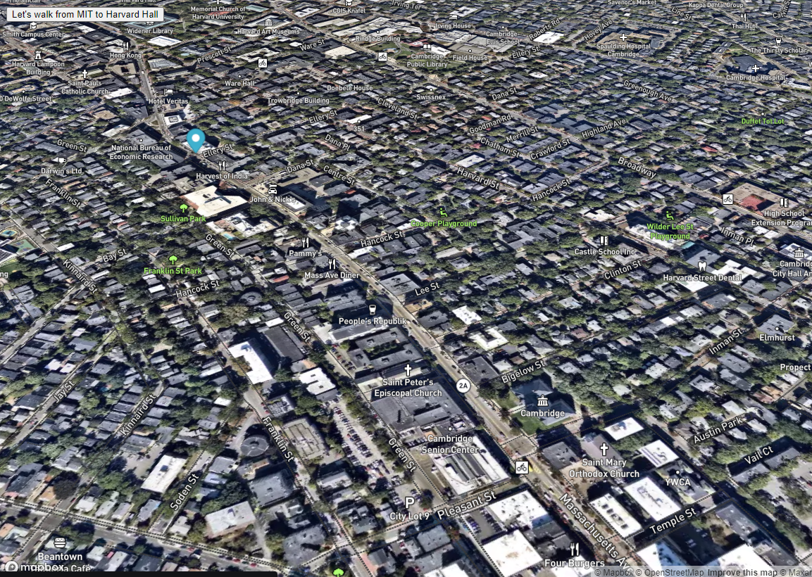

Pacmen Challenge
A game where you can add as many pacman as you want and let them race . They will fill up your screen and they will bounce at random speed.
View on Github
Eye Exercise
This is an animated eyes that follows your mouse pointer everywhere on your screen as you hover on it. Try to play with it, it is fun!
View on Github

Walking Tracker
An animated real time walking route from MIT to Harvard Hall. I customized my map using MapBox and came up with a 3D layer of map.
View on Github